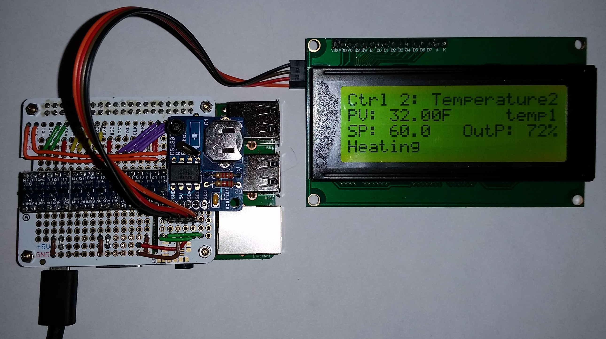

CellarWarden supports many different hardware configurations for temperature/humidity monitoring and control for a variety of applications. Here are a few examples of such hardware configurations.
Here, a modest monitoring configuration is shown. A Raspberry Pi is connected via a Pi Cobbler Plus to a breadboard. A single DS18B20 1-wire temperature probe is connected to GPIO 4, with a 4.7k resistor tied to the 3.3 volt rail. A single DHT22 temperature/humidity probe is connected via GPIO 5, also with a 4.7k resistor tied to 3.3V. A single door switch is connected to GPIO 21, and if the door is closed, this will pull the GPIO pin to 3.3V. This configuration is useful for monitoring wine cellars, meat lockers, cigar humidors, refrigerators, etc.
Shown are two DHT22/AM2302 sensors connected on GPIO pins 5 and 6 (RPiB+), two DS18B20 1-wire sensors connected in series to GPIO pin 4, a 20 x 4 parallel LCD display based on the Hitachi HD44780 display driver and a door switch connected to GPIO pin 21 through a TLP621 optocoupler. This optocoupler is required to provide enough current to the LCD backlight, while isolating the GPIO pin from the 5V used for this backlight. Alternatively, a DPDT microswitch can be used for the door switch, allowing 3.3V to be used to switch the GPIO pin high (3.3V) when the door is closed while switching 5V to the LCD backlight when the door is open. If no LCD is used, just run the common of a SPDT microswitch to 3.3V and the GPIO pin to the normally open terminal. As the RPi runs at 3.3V, it is imperative that 5V not be sent to the GPIO pins, as this will surely destroy your RPi. While not required, an Adafruit Pi Cobbler Plus simplifies wiring this up on a breadboard.
In this example, CellarWarden is configured to control several actuators and uses two (up to 8) DS18B20 1-wire temperature sensors, two DHT22 temp/humidity probes, a 20 x 4 LCD panel over the I2C bus. All inputs and outputs are buffered by I2C compatible bi-directional logic level shifters (LLS). Three 4-channel bi-directional LLS boards similar to these are used, with all input and output shifted from the RPi's 3.3V output to 5V output. These LLS boards are useful, as they shield the RPi from damaging high voltages. In addition, they provide sufficient voltage and current for driving LCD panels and actuators without causing "brown outs" of the RPi's 3.3V line. Also shown is a realtime clock (RTC) board based on the DS1307 chip connected to the buffered I2C bus. This provides a means to obtain the current time even if the RPi is not connected to the internet (where it normally obtains the current date and time). The I2C-compatible 20 x 4 LCD display in this case is also connected to the I2C bus via an I2C LCD display "backpack" based on the PCF8574 8-bit port expander chip. In this case, the LCD address on the I2C bus is 0x27 and the RTC board is at 0x68. More information about setting up the I2C bus on an RPi can be found here.
This configuration can be built using a breadboard and Pi Cobbler Plus as shown, or can be built into a more permanent configuration using a Perma Proto HAT board...

This shows an RPi 3 board with the Perma Proto HAT connected to an RTC board and a 20 x 4 LCD display over the LLS buffered I2C bus. Note the position of the bi-directional LLS boards, three of which are included. These three boards provide a total of twelve 5V buffered inputs and outputs: 1-wire bus, two DHT-type sensors, the I2C bus, and 7 additional I/O ports that can be used for connecting to door switches or actuators. Since the buffered outputs are at 5V, these can directly drive mechanical and solid state relay (SSR) boards developed for the Arduino. Despite its compact size, this configuration will support seven actuators or door switches. If more buffered I/O is needed, additional LLS boards may be employed, but this would not likely fit onto a Perma Proto HAT board.
{kind=link}